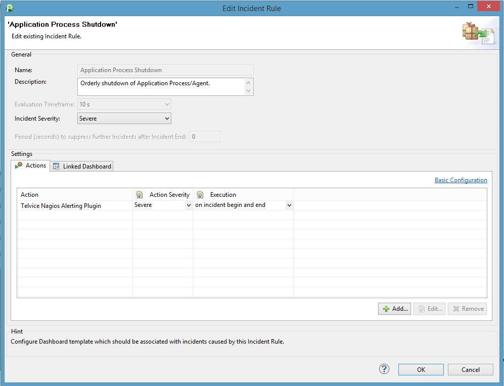
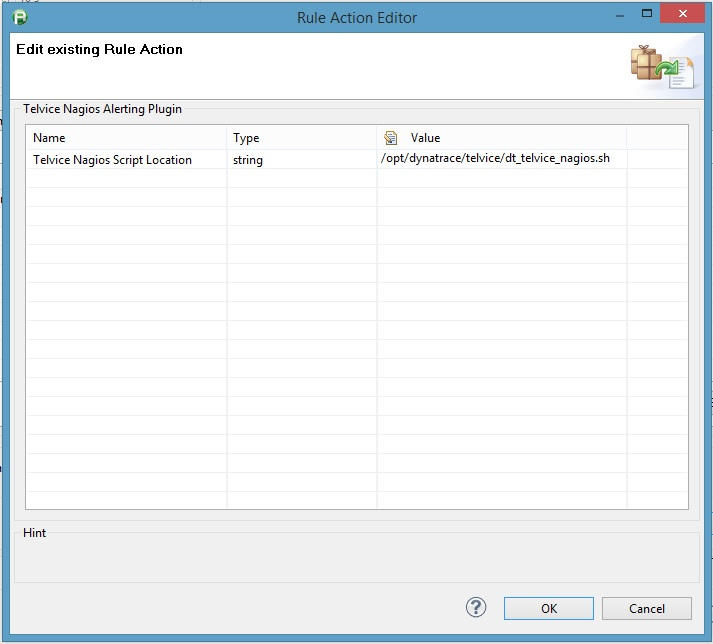
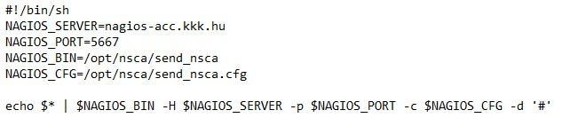
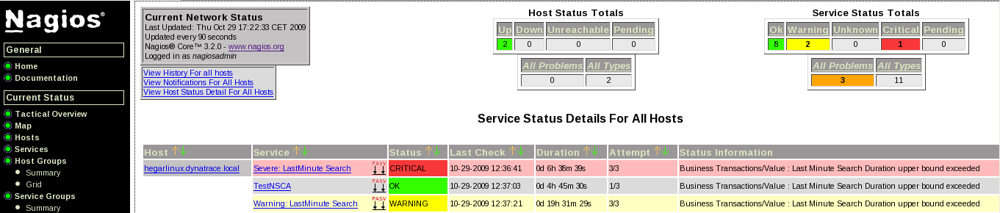

Nagios Alerting Plugin
This plugin allows sending dynaTrace alerts to a Nagios server using passive checks. Alerts can be posted only remotely (when Nagios and dynaTrace is on different hosts) using the NSCA (NSCA daemon on the Nagios side and the NSCA client on the dynaTrace side).
Installation
-
On the dynaTrace server side, import the plugin jar file and activate the plugin. Then, you need to add the Nagios Action Plugin in the 'Extended Actions' of each of the incidents you want to generate Nagios alerts for. You also need to install the nsca client (download here for Linux or Win32) on the dynaTrace server.
-
On the Nagios side, you need to declare the host and the services which you will generate alerts for. The host is arbitrary as you will be able to configure it for each alert you will generate from dynaTrace. The service description on the other hand must match the name of the incident that will trigger the alert.
Incident Configuration
Important to set up the execution list to: on incident begin and end, so dynaTrace can inform Nagios when the incidents end.

Plugin Script Location
Setup dt_telvice_nagios.sh unix script location.
You should copy this script to this location on the dynaTraceServer host.

Plugin Script Parameters
Setup these variables: NAGIOS_SERVER, NAGIOS_PORT, NAGIOS_BIN, NAGIOS_CFG in the dt_telvice_nagios.sh script.

Nagios Service/Host configuration
# HOST DEFINITION
define host {
use linux-server
host_name hegarlinux.dynatrace.local ; MATCH THE HOSTNAME IN THE ALERT RULE DEFINITION
alias dynatrace-server
address 127.0.0.1
}
# SERVICE TEMPLATE DEFINITION
# Template for the service : dynaTrace alerts from the command file
define service {
name passive_checkservice
use generic-service
active_checks_enabled 0
passive_checks_enabled 1
normal_check_interval 1
check_period 24x7
check_interval 1
retry_interval 1
}
# SERVICE DEFINITION
# Define each dynaTrace alert that we want to be processed by Nagios
define service {
use passive_checkservice
host_name hegarlinux.dynatrace.local ; MATCH THE HOST DEFINED EARLIER
service_description Warning: LastMinute Search ; MATCH THE IINCIDENT NAME
register 1
check_command check_ping ;not used but mandatory command
}
Nagios Overview

|
Name
|
Nagios Alerting Plugin (
not supported, old version
)
|
|
Version
|
1.0.0
|
|
dynaTrace Version
|
3.0.1
|
|
Author
|
Alain Hélaïli (alain.helaili@compuware.com)
|
|
Download
|
Plugin binary : com.dynatrace.plugins.nagios_1.1.0.jar
Sample config file : send_nsca.cfg
|
|
License
|
dynaTrace BSD
|
|
Known problems
|
-
The sent hostname for Nagios is the host of the dynaTraceServer not the host of the alerting agent
-
Does not send "ok" notification to Nagios when the incident ends
-
This plugin not supported anymore
|